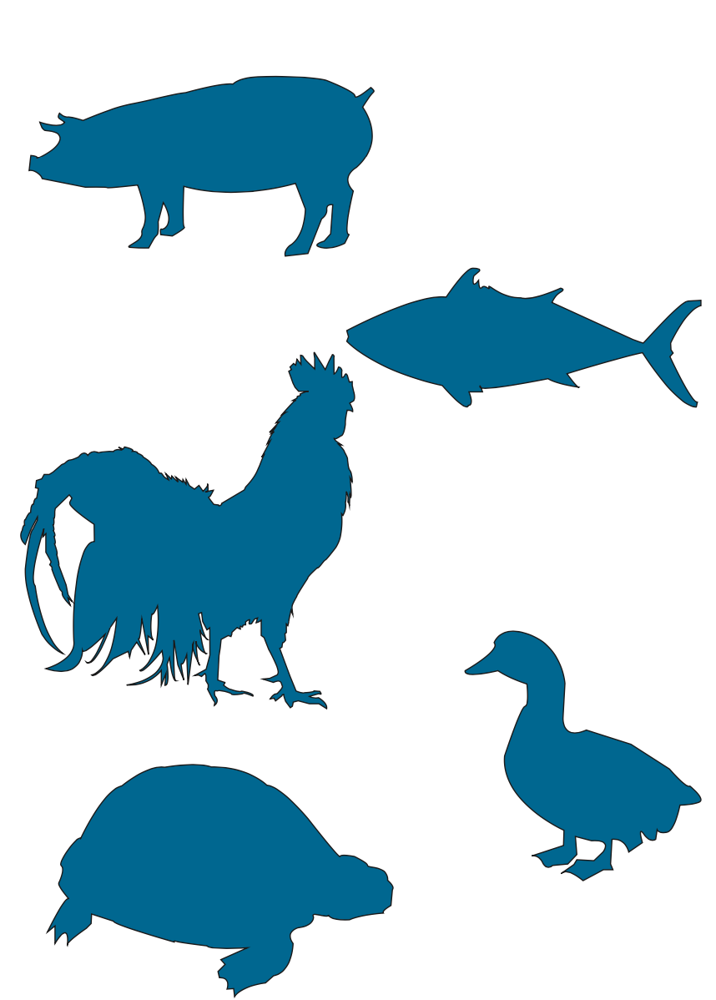
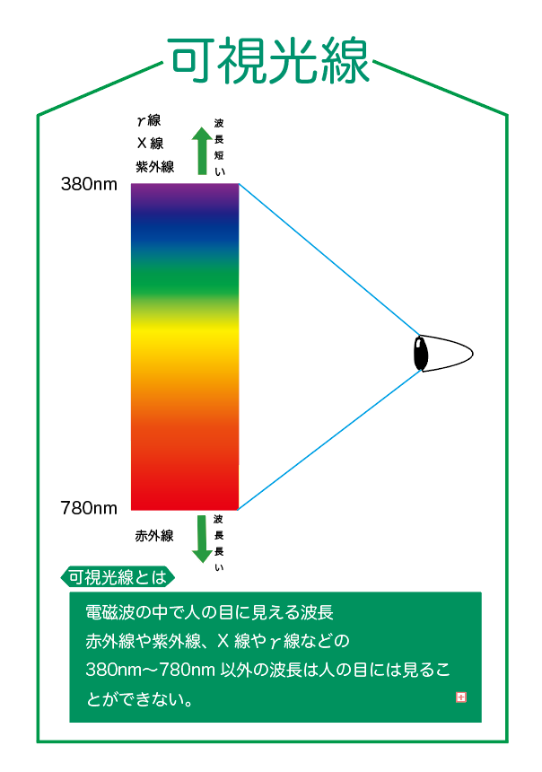
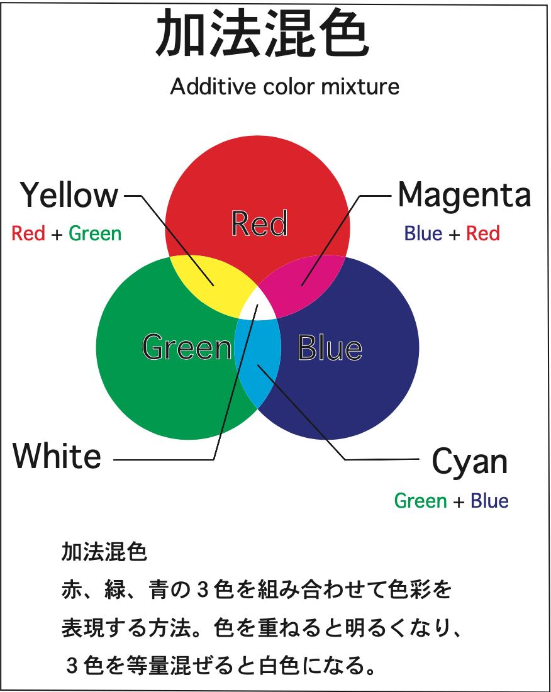
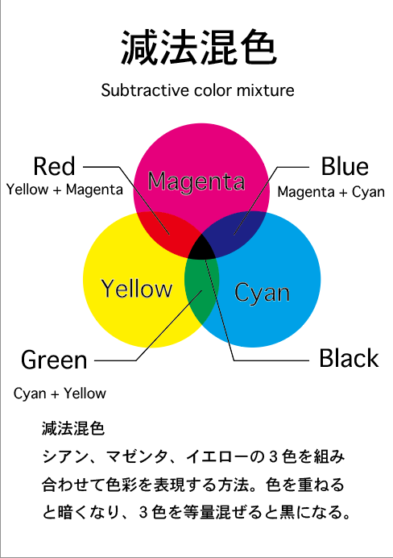

ネット上で探してきた動物の写真を、Illustratorを使用して型抜きした作品である
動物の切り抜き作品
ネット上で探してきた動物の写真を、Illustratorを使用して型抜きした作品である
製作した動物は上から順にブタ、サカナ、ニワトリ、アヒル、カメとなっている

可視光線について知らない人がこのポスターを見て理解できるように製作したポスター
可視光線説明のポスター
可視光線について知らない人がこのポスターを見て理解できるように製作したポスター
Illustratorによって製作し、簡潔にまとめることで無駄となる情報をできる限り省いた

加法混色についてまとめたポスター
加法混色説明ポスター
加法混色についてまとめたポスター
説明に使用する色以外は白黒にすることで、見ている側が混乱しないように手がけた

減法混色についてまとめたポスター
減法混色説明ポスター
減法混色についてまとめたポスター
左の加法混色ポスターと同じデザインにすることで２つを見比べた時に色に違いをより注目できるように考えて製作した